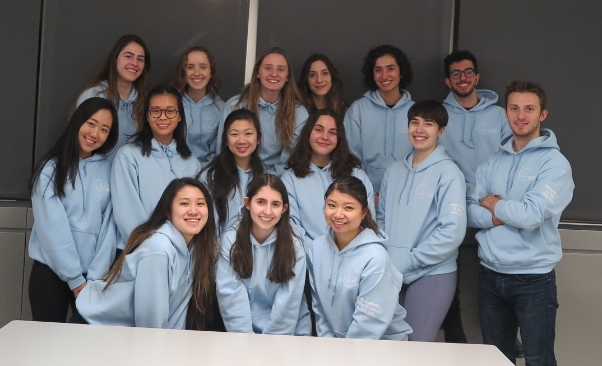

PULS 2018-2019
The Physiology Undergraduate League of Students is the student government of the Physiology Department at McGill University

Our Members
Zoe Verzani
President
Photo Credits: BEEhind the Lens Photography
Program: Major Physiology, Minor Environment
Favorite cell: Transitional Cells
Favorite drink: Seltzer
Fun fact: I can solve the Rubix cube while you're blindfolded ;)
Office hours: Thursdays 12:30 - 2:30
Hey PHGY fam ♥ I'm Zoe, the President of the best department at McGill! I'm from New York and I love the outdoors and staying active! I am always down for a good hike or a fun ski trip. I have a major sweet tooth that the dentist refuses to remove, but when I am not munching on candy I can be found eating some bomb vegetarian food. You'll find me running around campus doing PULS errands by day or walking around Montreal sporting my Walksafe jacket by night. You may also catch me in Cybertech staring out the window wishing I was outside. I am so excited for this school year! There is nothing in the world that I would rather do than Physiology! I love the PHGY community and sharing it with all of you, so please come stop by during my office hours! I am always down to chat and love making new friends :) It's never too late to join the PHGY family, I hope to see all of you at our PULS events!
Kelsey Capiendo
Vice President
Photo Credits: BEEhind the Lens Photography
Program: Liberal Physiology, Minor Kinesiology
Favorite molecule: Bilirubin
Favorite restaurant in Montreal: L'Avenue
Fun fact: My height is 5'2 and I'm the tallest in my family (excluding my dad)
Office hours: Mondays 10:30 - 12:30
Hey PHGY fam! I'm Kelsey, your Vice-President this year! I was born and raised in Winnipeg, MB, but also love Montreal. I'm always up for an adventure (or have trouble saying no to friends). I enjoy trying new foods, the colour pink and being a crazy cactus lady. You can probably find me studying on the 5th floor of Schulich or dying on the 6th floor. At PULS events, I'll probably be the one who's over-excitedly cheering and trying to get people to join. I love making new PHGY/IHI friends (and others too #WeAreAllBestFriends), so come visit me or slide into my DMs. I would love for every PHGY student to feel welcome and included, so I hope you all come out to our events and I can't wait to meet you :)
Sakiko Ohashi
VP Finance

Photo Credits: BEEhind the Lens Photography
Program: Major Physiology, Minor Biotechnology
Sub-field of interest: Sleeping and Eating
Favorite PHGY-related protein: Acetaldehyde dehydrogenase
Favorite non-PHGY-related protein: Beef, but I like chicken too
Fun fact: I've lived in the States for 9 years on a traveler's visa! #rip
Office hours: Thursdays 10:30-12:30
Hey pham! I'm Sakiko, your VP Finance this year! I'm from Japan, although I've spent roughly half my life in the States. You'll most likely see me running around campus (because none of my classes are recorded anymore rip), anywhere with food, and uh, looking for more places with food! Can't wait to meet you all at our events and feel free to hit me up whenever (#weareallbestfriends), whether it be about PHGY or anything else!
Meaghan Storey
VP Internal
Photo Credits: BEEhind the Lens Photography
Program: Major Physiology, Minor Philosophy
Sub-field of interest: Bioethics
Favorite organ: Kidneys
Favorite non-PHGY-related thing: Food
Fun fact: I have been within the Arctic Circle!
Office hours: Fridays 10:30 - 12:30
Hey Phgy! My name is Meaghan and I am your VP Internal. I am a U3 student in my final year. I am hoping to go on to study Bioethics post grad! A fun fact about me is last year I was on exchange in Glasgow, Scotland. This year I am responsible for planning social events for phgys to meet each other and de-stress. I am really excited to meet all of you and have a fantastic year!
Elya Quesnel
VP Academic
Photo Credits: BEEhind the Lens Photography
Program: Major Physiology
Sub-field of interest: Experimental Medicine
Favorite system: Cardiovascular System
Favorite non-PHGY-related thing: Travelling
Fun fact: I have four first names!
Office hours: Fridays 12:30 - 2:30
Hey PHGY! My name is Elya, and I'm your PULS VP Academic for this year! I am super excited to be part of the PULS council and do things such as; work with the department and you on adding learning resources, address concerns about courses, and help students have more access to research opportunities. Please feel free to drop by my office hours to discuss anything you want to about the Physiology program, or come to PHGY Fridays to talk with the whole council! Have a great year!
Jamie Halperin
Communications Director

Photo Credits: BEEhind the Lens Photography
Program: Liberal Physiology, Minor Management
Sub-field of interest: Classical Violin
Favorite protein: Caspases
Favorite book quote: "Always", Severus Snape from Harry Potter and the Deathly Hallows
Fun fact: I'm 4'10 and have a size 3 foot... #ripshoeshopping
Office hours: Tuesdays 12:30 - 1:30
Hey PHGY Pham! My name is Jamie and after serving as a U1 Rep last year, I can't wait to continue on PULS as your Communications Director! I run the PULS website and will be the one answering your e-mails and messages to the Facebook page. I've lived on the island of Montreal my entire life in a faraway land called the "West Island"... only fellow West Islanders understand the transit pain. Now, there are a few things you should know about me from the get-go... If you mention Harry Potter in my presence, we shall be instant friends. If you dare bring up Game of Thrones, prepare yourself for an hour-long speech about my favorite end-game theories. And, if you casually sing a Disney lyric while we're hanging out, know I will be forced to sing the ENTIRE song from beginning to end. Now that you've been fairly warned, I hope to see you all at PULS events (I'm usually the one napping on the couch)! Let's make this an unforgettable year! ♥ ♥ ♥
Sara Nam
Charity Director
Photo Credits: BEEhind the Lens Photography
Program: Major Physiology
Favorite enzyme: Luciferase
Favorite non-PHGY-related thing: My mom
Fun fact: I play 6 instruments!
Office hours: Wednesdays 1:30 - 2:30
Hey PHGY! My name is Sara, I'm currently in U1 and I'm originally from Chilliwack, BC. Being from BC, I love being out in nature, especially going on cool hikes and cliff jumping in the summer. Otherwise, I like to spend my free time trying new foods and finding new tunes. I'm looking forward to all of the events we have planned this year and I can't wait to meet you all. I'm always down to chat so please feel free to say hello!
Angel Yu
VP Athletics and Publicity
Photo Credits: BEEhind the Lens Photography
Program: Double Major Physiology and Computer Science
Sub-field of interest: Microtubules
Favorite pipette size: P20. I also have a strong feeling of dislike towards the P1000
Favorite study spot: Law library or my bed
Fun fact: I'm double-jointed in all my fingers
Office hours: Mondays 12:30 - 1:30
Hello PHGY! I'm your VP Athletics and Publicity this year. I was born in China and moved to BC when I was 8. I'm a badminton player and am highly competitive at almost everything except running (I hate running, please don't make me do it). Also, I have an unhealthy obsession with bubble tea, cats, and chai lattes. Don't be afraid to say hi if you see me around or message me out of the blue for anything, even if you just want to chat, and I hope to see all of you at PULS events this year! #weareallbestfriends
Monika Noble
U3 Representative
Photo Credits: BEEhind the Lens Photography
Program: Major Physiology, Minor Classics
Sub-field of interest: History
Favorite cell: Osteoclast
Favorite book: A Constellation of Vital Phenomena
Fun fact: I have a birthmark on my retina!
Office hours: Wednesdays 11:30 - 12:30
Hey phgy pham! I'm Monika, one of your U3 reps. I'm from St. John's, Newfoundland and I'm super excited about this year and getting to work with the rest of the council to make it great. I'll be hanging out in the PULS office a lot so feel free to drop by and say hi or message me with any questions you have (or if you just want to chat)! I love reading basically any type of book or comic, running when I actually get to the gym, and watching Buzzfeed Unsolved videos. I'm looking forward to seeing you all at our PHGY Fridays and other events!
Pierre Revil
U3 Representative
Photo Credits: BEEhind the Lens Photography
Program: Honours Physiology
Sub-field of interest: Neurophysiology/Neuroscience
Favorite cell: Parvalbumin Interneuron
Favorite non-PHGY-related thing: Sports and spending time with friends!
Fun fact: I say "wow" a lot. Wow
Office hours: Wednesdays 10:30 - 11:30
Hey everyone! I'm Pierre, one of your VP Hypeee... urghh... U3 Reps for the year 2018-2019! I'm super excited to be here for you and make sure that everyone's (or almost everyone's) last year at McGill will be unforgettable! I'm from a small town in France between lakes and mountains called Annecy (the most beautiful city in the world) but traveled around quite a bit before ending up here in Montreal! I love sports in general but more specifically swimming and ice hockey (Go Habs Go)! You'll probably find me early in the morning at the memorial pool, around the McIntyre/Bellini buildings during the day or at PHGY Friday at the end of the week! I can't wait to meet you all at any of our awesome PHGY events and wish you an amazing year with the PHGY family!
Nasri Balit
U2 Representative
Photo Credits: BEEhind the Lens Photography
Program: Major Physiology, Minor Management
Sub-field of interest: Psychiatry
Favorite system: Vestibular System
Favorite summer album: Astroworld - Travis Scott
Fun fact: I've never been to the U.S.
Office hours: Tuesdays 10:30 - 11:30
Hey guys, I'm Nasri and I'm going to be one of your U2 reps this year. I'm from Syria but grew up in Dubai so Montreal winters were a massive shock to me. I've been here for 3 years now so I'm kind of used to it but I miss not having to check the forecast every morning to decide how many layers I'm putting on. Catch me making sure PHGY 311 and 314 are recorded/living in the library. Stop me after class or drop by the PULS office if you ever want to talk about anything!
Camille Zeitouni
U2 Representative
Photo Credits: BEEhind the Lens Photography
Program: Major Physiology, Minor Psychology
Favorite amino acid: Tryptophan
Favorite non-PHGY-related thing: Sleeping
Fun fact: I can juggle
Office hours: Tuesdays 1:30 - 2:30
Sup PHGY fam! My name is Camy and I'm one of your U2 reps this year! I was born and raised in the best city in the world a.k.a. Montreal. When I'm not studying, you can find me going on runs on Mount Royal, playing basketball (#ballislife), eating ice cream and most probably sleeping. I'm super excited to be on PULS this year and would love to meet everyone in the PHGY family! See you at PHGY Friday!
Carrie Rong
U1 Representative
Photo Credits: BEEhind the Lens Photography
Program: Major Physiology
Sub-field of interest: Classical Piano
Favorite molecular complex: ATP synthase
Favorite person: You
Fun fact: If I had to eat one food for the rest of my life, it would be noodles
Office hours: Tuesdays 11:30 - 12:30
Hey friends! I'm Carrie and I'll be your U1 Rep this year! I'm from a quaint little town called Calgary, Alberta, so catch me desperately trying to learn French to fit in with all these Montrealers. I love cooking, eating, painting, and being a plant mom. When I'm not studying in Cybertheque, you can probably find me at synchro practice, the music building, or attending all the PULS events! Don't hesitate to talk to me if you have any questions or concerns about U1 or anything in general :) I'm so pumped to meet everyone in PHGY!!!
Anna Zarzycki
U1 Representative
Photo Credits: BEEhind the Lens Photography
Program: Major Physiology
Sub-field of interest: Modular Bioeletric Prostheses and Cardiovascular Surgery
Favorite cell: NK cell
Favorite burger spot: Five Guys
Fun fact: An otter once high fived me and that was my peak of happiness
Office hours: Wednesdays 12:30 - 1:30
Hey Pham! I'm Anna, one of your U1 Reps this year. I grew up in Alberta and my family's originally from Poland, but my heart is definitely in Montreal. I love all things outdoors and am always down to go exploring when I'm not trying new brunch places. You can probably find me desperately trying to run my meal plan into the ground or studying and secretly snacking in Burnside's basement when I'm not bouncing from the lab bench to the clinic. I'm super excited to meet everyone, so feel free to blast me on social media (DMs are always open), visit me or just say hi!
Isabelle Flinn
IHI Representative
Photo Credits: BEEhind the Lens Photography
Program: Interdepartmental Honours Immunology (IHI)
Sub-field of interest: Virology
Favorite molecule: TdT
Favorite restaurant in Montreal: La Prunelle
Fun fact: I spent 5 weeks last summer backpacking solo around New Zealand
Office hours: Mondays 1:30 to 2:30
Hi PHGY and IHI fam! I'm Isabelle, the IHI rep for this year! I am from Burlington Vermont, right across the border. I love hiking, exploring MTL, and running! My favorite place to run in MTL is on the bike path along the canal towards Atwater. Feel free to message me if you are interested in IHI or just want to know what it is! I can't wait to meet you all!!!